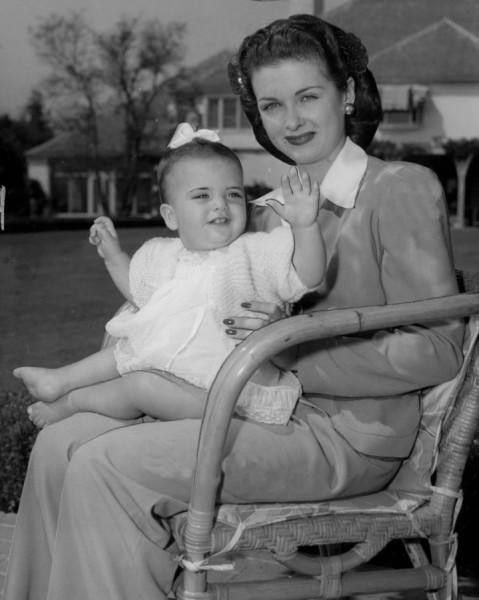
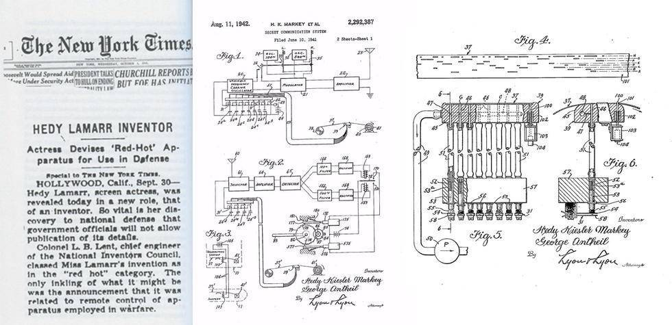

Famila

Hedy nasceu como Hedwig Eva Maria Kiesler, em Viena, na Áustria-Hungria, em 9 de novembro de 1914.
Era a filha única de Gertrud Lichtwitz Kiesler, uma pianista de família judaica de Budapeste, e de Emil Kiesler, gerente financeiro
de um grande banco de Viena.
O interesse na atuação veio desde cedo, quando Hedy, ainda criança, assistia a peças de teatro e a filmes. Estudou balé e piano até os 10 anos e aos 12 anos, ganhou um concurso de beleza em Viena.
Hedy era muito ligada ao pai, com quem tinha conversas
sobre política, ciência, tecnologia e ele foi uma grande inspiração para sua invenção futura.
Mâe de Três filhos e casada por 6 vezes, Hedy morreu em 19 de janeiro de 2000, aos 85 anos
Atriz

"Iniciou sua carreira como figurante no filme Money on the Street (1930), a partir dai estrelou em vários filmes, alguns polêmicos para a epoca , onde protagonisou o primeiro nu frontal e a primeira cena de orgasmo feminino"
Filmografia:
- Das Geld liegt auf der Straße (Money on the Street, 1930)
- Die Frau von Lindenau (Storm in a Water Glass, 1931)
- Die Abenteuer des Herrn O. F. (The Trunks of Mr. O. F., 1931)
- Man braucht kein Geld (We Need No Money, 1932) Ekstase
- Symphonie der Liebe (Ecstasy, 1933) ("Êxtase")
- Algiers (1938) ("Argélia")
- Hollywood Goes to Town (1938) (curta-metragem)
- Screen Snapshots: Stars at a Charity Ball (1939) (curta)
- Lady of the Tropics (1939) ("Flor dos Trópicos")
- I Take This Woman (1940) ("A Mulher Que Eu Quero")
- Boom Town (1940) ("Fruto Proibido")
- Comrade X (1940)
- Come Live with Me (1941)
- Ziegfeld Girl (1941) ("Este Mundo é um Teatro", ou "A Vida é um Teatro")
- H.M. Pulham, Esq. (1941)
- Tortilla Flat (1942) ("Boêmios Errantes")
- Crossroads (1942)
- White Cargo (1942)
- Show Business at War (1943) (curta)
- The Heavenly Body (1944)
- The Conspirators (1944)
- Experiment Perilous (1944)
- Her Highness and the Bellboy (1945)
- The Strange Woman (1946)
- Dishonored Lady (1947)
- Let's Live a Little (1948)
- Samson and Delilah (1949) ("Sansão e Dalila")
- A Lady Without Passport (1950) ("A Mulher Sem Nome")
- Copper Canyon (1950)
- My Favorite Spy (1951)
- The Eternal Female (1954) (inacabado)
- Loves of Three Queens (1954)
- The Story of Mankind ([1957)
- The Female Animal (1958)
Invenções

"Lamarr inventou o sistema que serviu de base para os telefones celulares.
Durante a Segunda Guerra Mundial, criou um sofisticado aparelho de interferência em rádio para despistar radares nazista que patenteou em 1940, usando o seu verdadeiro nome, Hedwig Eva Maria Kiesler.
A versão inicial consistia na troca de 88 frequências e era feito para despistar radares, mas a ideia pareceu difícil de realizar na época.
O projeto não foi concretizado até 1962, quando o aparelho passou a ser utilizado por tropas militares dos EUA em Cuba, quando a patente já expirara; a empresa Sylvania adaptou a invenção. em 1997 a Electronic Frontier Foundation deu a Lamarr um prêmio por sua contribuição.
A ideia do aparelho de frequência de Lamarr e Antheil serviu de base para a moderna tecnologia de comunicação, tal como em conexões de Wi-Fi e CDMA, usada em telefones celulares
A técnica que ela criou permite que o emissor fique transmitindo em frequências variadas e evita que terceiros consigam captar a informação.
Isso foi usado na comunicação de guerra e mais tarde nos sistemas celulares GSM, CDMA, e até mesmo no 3G.
Apesar do reconhecimento Lamarr nunca recebeu um dolor pela sua invenção."
